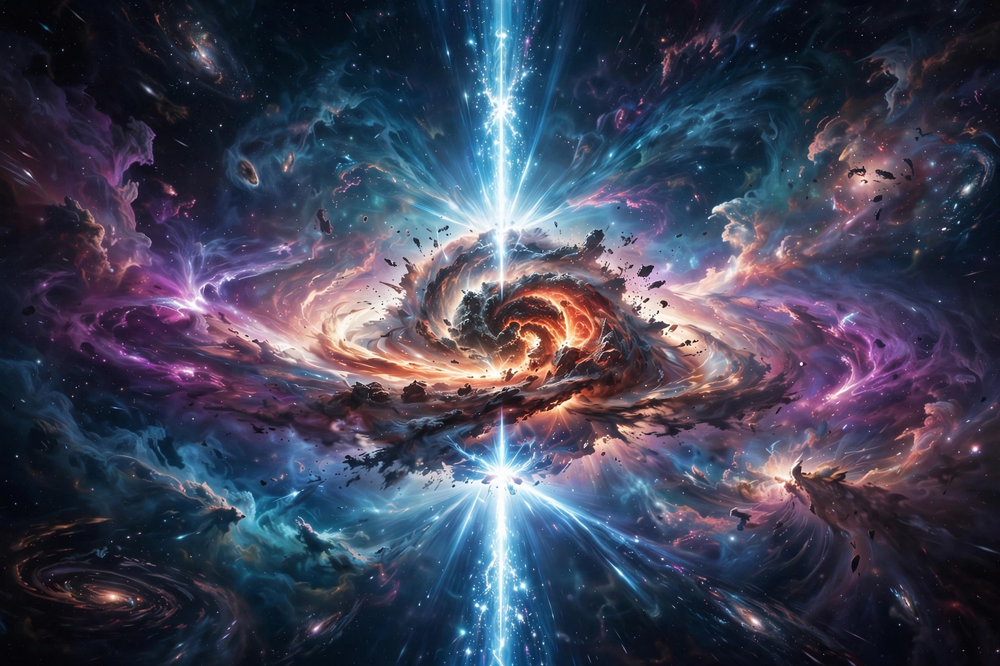

Gamma-ray burst

[Image: Artist's impression of a gamma-ray burst: a collapsing star firing twin jets of gamma rays into space]In gamma-ray astronomy, gamma-ray bursts (GRBs) are extremely energetic events observed in distant galaxies, described by astronomers as the brightest electromagnetic events known to occur in the universe. They are brief flashes of gamma rays — most lasting from tens of milliseconds to several minutes — followed by a longer-lived, fading 'afterglow' at X-ray, optical and radio wavelengths.
GRBs were discovered accidentally in 1967 by the US Vela satellites monitoring compliance with the nuclear test-ban treaty, and announced in 1973. Long bursts (over ~2 seconds) are now attributed to the collapse of massive stars (hypernovae) whose relativistic jets point at Earth; short bursts to mergers of neutron stars — confirmed when GRB 170817A accompanied the gravitational-wave event GW170817 and its kilonova. At their peak, GRBs briefly outshine the rest of the universe combined; the brightest seen, GRB 221009A (the 'BOAT', October 2022), saturated detectors and will likely remain a once-in-millennia event.
History and impact
For two decades GRBs' distances were unknown — whether they were galactic or cosmological was the subject of a famous 1995 debate (echoing the 1920 Shapley–Curtis debate) — until afterglow localisations in 1997 placed them in distant galaxies, implying energies up to several suns' worth of rest mass released in seconds, beamed into jets. GRBs illuminate the first stars and the reionisation era, probe intergalactic gas, and have been speculatively linked to mass extinctions (an Ordovician candidate), though the rate of a lethal nearby event is very low.